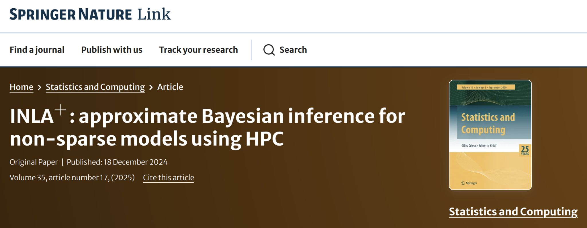

Ending 2024 with a New Journal Publication

I’m proud to share that my paper has been published in Statistics and Computing (Springer Nature) —
after a long journey of growth, revisions, and rejections.
📌 Why is this paper special?
- 📉 Most rejected paper in my journey — facing three rejections before being accepted.
- 🧠 First implementation of INLA based on dense matrices.
- 🔧 First to re-write INLA, including full technical integration of latent field and hyperparameters.
- 🎓 Represents the core of my Ph.D. research.
- 🏆 Won a poster award at the ISBA meeting in Canada for its preliminary work.
- 📚 The most educational paper I’ve worked on — statistically and computationally.
- 🔗 Bridges statistical methodology with computational efficiency in a novel way.
This paper pushed me harder than any before, but it also gave back more than any project I’ve worked on.
📄 Read the full paper here →